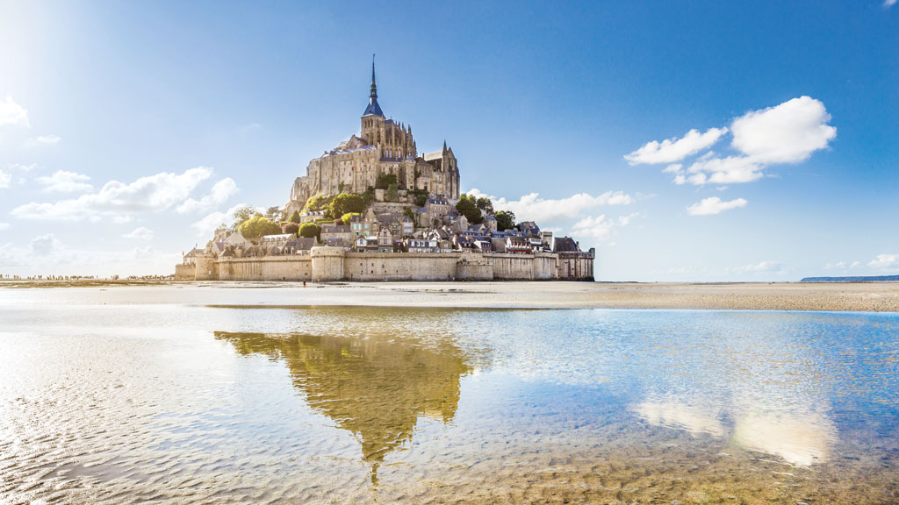

O Mont Saint-Michel é um dos pontos turísticos mais diversos do planeta, localizado em uma ilha rochosa na foz do Rio Couesnon, na França. Devido a essa estranha localização, é possível parecer que o vilarejo está no meio do mar, criando uma paisagem mágica e inacreditável. Em 1979 foi batizado como patrimônio histórico e mundial da UNESCO.
Além de tudo isso, o local também possui uma história volumosa, fundada pelo bispo de Avranches no ano 708. Primeiramente foi criado um santuário, que até hoje atrai fieis em busca de espiritualidade, importante local de oração e peregrinação. Ademais, serviu de penitenciária na época da Revolução Francesa, mantendo os presidiários sob vigia até o ano de 1860 e após isso foram transferidos ao continente.
A vasta história e horizontes que o Mont Saint-Michel possui proporciona uma experiência única aos turistas, destino imperdível para quem pretende ir ao continente ou já está na França

Stonehenge
O Stonehenge é um dos monumentos arqueológicos mais misteriosos do mundo, e está localizado na planície de Salisbury, na Inglaterra. Segundo fontes históricas, o local foi construído entre 3000 a.C e 2000 a.C e consiste em formações rochosas de pedras eretas e horizontais que formam um círculo, chamadas de megalitos.
Apesar de diversos estudos, ainda não foi possível concluir exatamente qual foi o intuito de sua construção, mas tudo indica que pode ter começado como um cemitério e foi evoluindo até chegar ao monumento atual. Teorias também dizem que foi utilizado como observatório astronômico, centros religiosos e reuniões políticas.
O ponto turístico famoso é protegido pelo English Heritage e sua principal atração são suas impressionantes pedras e pelo enigma que as cerca. Visitantes de todo o mundo vão até lá para contemplar a estrutura, que é especialmente popular durante o solstício de verão, quando o alinhamento das pedras com o nascer do sol cria um espetáculo visual único. É protegido pelo English Heritage
Travertines of Pamukkale
O “Castelo de Algodão”, conhecido como Pamukkale, está localizado na costa oeste da Turquia, região do vale do Rio Menderes, na província de Denizli. Foi declarado como Patrimônio Mundial da Unesco e desde então é altamente frequentado por ser um dos mais impressionantes destinos turísticos do mundo. O local é uma formação calcária de montanhas que atingem até 200 metros, as quais possuem diversas piscinas termais, atingindo 35ºC e formando cenários magníficos.
.jpg)